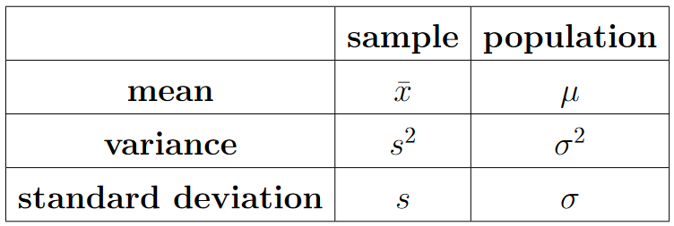
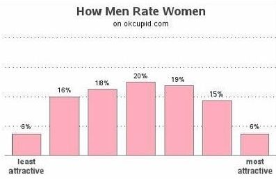
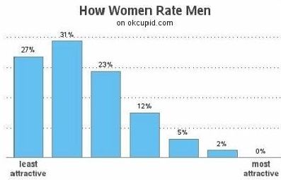

Overview
\[s^{2} = \displaystyle\frac{1}{n-1}\displaystyle\sum_{i = 1}^{n} (x_{i} - \bar{x})^{2}\]
Today’s main questions are “What is variance and what is a standard deviation?” We will go through
- the formulas and calculations
- demostrations
- applications (word problems)
Notation

We tend to study a relatively small sample to understand the behavior of a much larger population.

Example: Nathan’s Hot Dog Eating Contest
Each year on July 4, the Nathan’s Hot Dog Eating Contest takes place on Coney Island in New York. The rule is simple: eat as many hot dogs (and buns) as you can in 10 minutes. The past 5 winning amounts were: 63, 70, 72, 74, 71. Compute the variance.
\[s^{2} = \displaystyle\frac{1}{n-1}\displaystyle\sum_{i = 1}^{n} (x_{i} - \bar{x})^{2}\]

Units?
Demostrations
For each of the following sets
- \(A = \{1, 2, 3, 4, 5, 6, 7\}\)
- \(B = \{3, 4, 5, 6, 7, 8, 9\}\)
- \(C = \{-3, -2, -1, 0, 1, 2, 3\}\)
- \(D = \{-9, -6, -3, 0, 3, 6, 9\}\)
we will compute the sample mean, sample median, and sample standard deviation.
A <- seq(1, 7, 1)
B <- A + 2
C <- seq(-3, 3, 3)
D <- 3*Cmean(A)[1] 4mean(B)[1] 6median(A)[1] 4median(B)[1] 6sd(A)[1] 2.160247sd(B)[1] 2.160247mean(C)[1] 0mean(D)[1] 0median(C)[1] 0median(D)[1] 0sd(C)[1] 3sd(D)[1] 9Standardization
\[z = \displaystyle\frac{x - \mu}{\sigma}\]
To standardize data, compute a z-score by
- subtracting by the mean
- then dividing by the standard deviation
This calculation is considered to be “unitless”, and the units are usually said as “[number of] standard deviations above/below the mean”
Most data falls within two standard deviations of the mean,
\[\text{usually } z \in (-2, 2)\]
but \(z \in (-\infty, \infty)\)
Example: Dating Website Data

According to OkCupid data, if men rate women on a scale from 1 = “least attractive” to 7 = “most attractive”, the average score is 3.99 with a sample standard deviation of 1.6401.
- What is the \(z\)-score of a woman rated a “6”?
- What is the attractiveness score of a woman at a \(z\)-score of 1.5?

According to OkCupid data, if women rate men on a scale from 1 = “least attractive” to 7 = “most attractive”, the average score is 2.43 with a sample standard deviation of 1.2510.
- What is the \(z\)-score of a man rated a “6”?
- What is the attractiveness score of a man at a \(z\)-score of 1.5?
Looking Ahead
- due Fri., Feb. 3:
- WHW3
- JHW1
- Identity Statement (short essay)
- and the before-lecture quizzes
Exam 1 will be on Wed., Mar. 1
- more information will be in the weekly announcements